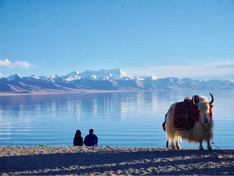

西藏大冒險
布達拉宮

最初是吐蕃王朝贊普松贊干布興建。於17世紀重建後，成為歷代達賴喇嘛的冬宮居所，為西藏政教合一的統治中心。
「布達拉宮」繼承了藏族建築的藝術手法，亦是中華民族古建築的精華之作。
堅實墩厚的花崗石牆體，松茸平展的白瑪草牆領，金碧輝煌的金頂，具有強烈裝飾效果的巨大鎏金寶瓶、幢和經幡，彼此間交相映輝，形成紅、白、黃三種色彩的鮮明對比。
宮殿的設計和建造根據高原地區陽光照射的規律，牆基寬而堅固，下面有四通八達的地道和通風口。
林芝桃花園

“林芝”是由藏文“尼池”或“娘池”音譯而來的，藏語意思是“娘氏家庭的寶座或太陽的寶座”。這是因為比起西藏其他地區來講，太陽總是先從這裡升起。
有世界上最深的峽谷—雅魯藏布江大峽谷，有世界第三深度的峽谷—帕隆藏布大峽谷，被稱為西藏的“小江南”。
因氣候濕潤，植被茂密，林芝的風景和西藏大部分地區有很大的區別。在林芝生活或行走，到處都是綠色的世界。正是這樣適宜的氣溫和降水，才有利於桃樹的生長，呈現出世界上最美的桃花。
納木措湖

納木措位於中國西藏中部, 在「世界屋脊」的青藏高原上, 屬於中國五大湖區的「青藏高原湖區」。
是西藏第二大的湖泊, 也是中國第三大的鹹水湖。面積約1920多平方千米, 湖面海拔4718米，為世界上海拔最高的大型湖泊。
「納木錯」為藏語是「天湖」的意思，是西藏的三個聖湖之一。傳說天湖保佑羊群，所以每逢藏曆羊年的「薩葛達瓦節」期間，有許多人來此朝聖。
崑崙山

崑崙即崑崙山，又稱崑崙虛、崑崙丘或玉山。地理觀念上的崑崙山，指西起帕米爾高原東部，橫貫新疆、西藏間，伸延至青海境內，全長約2500公里。
古代神話的西方崑崙，是漢以前地理上的崑崙一名與傳說中崑崙的結合。古書載崑崙山是玉龍騰空之地，素有亞洲脊柱之稱。
崑崙山峰巒起伏，林深古幽，景色秀麗，每逢春夏之交，滿山碧樹吐翠，鮮花爭奇鬥豔，使崑嵛山更具風韻，成為半島著名的風景遊覽區之一。
羊卓雍錯

羊卓雍錯又稱「裕穆湖」、「白地湖」、「牙木魯克湖」。裕穆湖，藏語意為「天鵝之湖」。
藏語「羊卓」意為「上部牧場」，「雍」意為「碧玉」，「錯」意為「湖」，合起來意思是「上部牧場碧玉湖」。
漢語又稱「羊卓雍湖」，簡稱為「羊湖」。藏傳佛教認為，羊卓雍錯是龍女的化身，也是女護法神的駐錫地，所以是聖湖。
在湖的西南岸、浪卡子縣城北10公里處，是藏傳佛教香巴噶舉派的桑頂寺，該寺是西藏唯一由女活佛主持的寺廟。